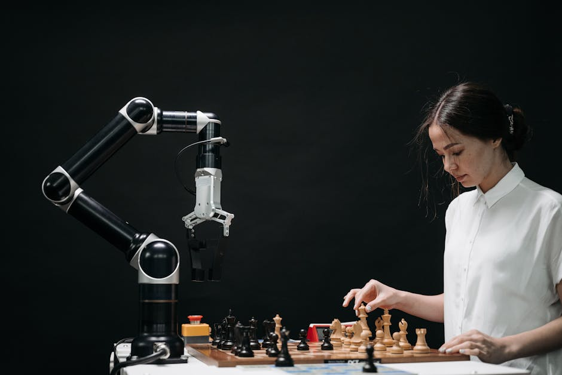

Imagine a world where robots don't just move, but truly *see* their surroundings. They can identify a misplaced tool, navigate a crowded room, or even recognize your face and respond accordingly. This isn't science fiction anymore; it's the incredible reality brought to us by Computer Vision – the magic that gives robots their eyes. Just like our eyes gather light and our brains interpret it, computer vision teaches machines to process visual information from cameras and make sense of the world around them. It's the superpower that's transforming robotics, turning simple machines into intelligent collaborators.
What is Computer Vision?
At its core, Computer Vision is a field of artificial intelligence that trains computers to "see" and interpret images and videos in a way that is meaningful to humans. Think about it: when you look at a picture of a cat, you instantly recognize it as a cat, perhaps even knowing its breed or mood. For a computer, that same image is just a grid of numbers – pixels, each with a specific color value.
Computer Vision algorithms are designed to analyze these grids of numbers to identify patterns, shapes, colors, and textures. They learn to distinguish between different objects, understand spatial relationships, and even track movement over time. This capability is absolutely fundamental for any robot that needs to interact intelligently with its environment.
Why is Computer Vision Crucial for Robotics?
Without computer vision, robots are essentially blind. They might be able to follow pre-programmed paths or react to simple sensor inputs, but they lack the flexibility and intelligence to operate in dynamic, real-world environments. Here's why it's a game-changer for robotics:
Robot Perception:
It allows robots to perceive and understand their environment. This includes recognizing objects, people, and obstacles, and understanding their positions and orientations in 3D space.Navigation and Mapping:
Robots use computer vision to build maps of their surroundings, localize themselves within those maps, and navigate safely. Autonomous vehicles rely heavily on vision systems to detect lanes, traffic signs, other vehicles, and pedestrians.Object Recognition and Manipulation:
In manufacturing and logistics, robots need to identify specific items, pick them up, and place them accurately. Computer vision enables them to distinguish between different parts, inspect for defects, and guide robotic arms for precise manipulation.Human-Robot Interaction:
For robots to work alongside humans, they need to understand human gestures, facial expressions, and intentions. Computer vision facilitates this by allowing robots to "see" and interpret human cues, leading to more natural and intuitive interactions.Quality Control and Inspection:
In industrial settings, vision systems can quickly and accurately inspect products for defects, ensuring high quality standards much faster and more consistently than human inspectors.
How Does Computer Vision Work? The Basics
The process of a computer "seeing" and interpreting an image typically involves several steps:
- Image Acquisition: This is where cameras come in. Just like our eyes, cameras capture light and convert it into digital data (pixels).
- Image Pre-processing: Raw images often need cleaning up. This can involve resizing, converting colors (e.g., to grayscale to simplify analysis), noise reduction, or enhancing contrast to make features more visible.
- Feature Extraction: This is where the computer looks for interesting parts of the image – edges, corners, blobs, textures, or specific color regions. These "features" are like clues the computer uses to identify objects.
- Object Detection and Recognition: Using algorithms, the computer tries to match the extracted features with known patterns or models to identify specific objects. For example, it might look for a specific pattern of edges that forms a square, then compare it to a database of known squares.
- Decision Making: Based on the visual information, the robot can then make decisions – whether to move forward, pick up an object, or alert a human operator.
"Computer vision isn't just about making robots see; it's about giving them the ability to understand, react, and learn from the visual world, unlocking unprecedented levels of autonomy and intelligence."
Key Techniques and Concepts
The field of computer vision is vast, but some core concepts are essential for robotics:
- Object Detection: This technique not only identifies *what* objects are in an image but also *where* they are, usually by drawing a bounding box around them. Think of it as a robot spotting a ball and knowing its exact location on the floor.
- Image Recognition (Classification): This involves categorizing an entire image. For example, telling if a picture contains a cat or a dog. While important, object detection goes a step further by localizing multiple objects within a single image.
- Object Tracking: Once an object is detected, tracking algorithms allow the robot to follow its movement over time. This is crucial for robots interacting with moving targets, like a drone following a person or a robotic arm tracking a part on a conveyor belt.
- Image Segmentation: This is a more detailed form of object detection where the algorithm outlines the exact shape of an object at a pixel level, rather than just a bounding box. It helps robots understand the precise boundaries of objects.
OpenCV: The Robot's Eyesight Toolkit
When you dive into computer vision for robotics, you'll quickly encounter OpenCV (Open Source Computer Vision Library). It's a powerful, open-source library packed with hundreds of computer vision algorithms. It's the go-to tool for developers and hobbyists alike, making complex vision tasks much more accessible.
OpenCV can be used with various programming languages, but Python is particularly popular due to its simplicity and extensive ecosystem. Let's look at a super basic example of how you might use OpenCV to load and display an image:
import cv2 # Import the OpenCV library
# Define the path to your image
# Make sure you have an image file named 'robot_image.jpg' in the same directory
image_path = 'robot_image.jpg'
# Read the image from the specified path
# If the image is not found, 'img' will be None
img = cv2.imread(image_path)
# Check if the image was loaded successfully
if img is None:
print(f"Error: Could not load image from {image_path}. Please check the path.")
else:
# Convert the image to grayscale (often done for simpler processing)
gray_img = cv2.cvtColor(img, cv2.COLOR_BGR2GRAY)
# Display the original image
cv2.imshow('Original Robot Image', img)
# Display the grayscale image
cv2.imshow('Grayscale Robot Image', gray_img)
# Wait for a key press indefinitely (0 means wait forever)
# This keeps the image windows open until you press any key
cv2.waitKey(0)
# Destroy all the windows created by OpenCV
cv2.destroyAllWindows()
print("Image processing complete!")
This simple code snippet demonstrates how to load an image, convert it to grayscale (a common first step in many vision tasks), and display both the original and processed images. It's a foundational step towards building more complex vision applications for your robots!
Real-World Applications in India and Beyond
Computer vision in robotics is not just a theoretical concept; it's driving innovation across numerous industries, with significant potential and growth in India:
- Manufacturing & Automation: Robots on assembly lines use vision to pick and place components, inspect products for defects, and ensure quality control in industries from automotive to electronics.
- Agriculture (Agri-Tech): Vision-enabled robots can monitor crop health, identify weeds, precisely spray pesticides, and even autonomously harvest fruits and vegetables, boosting efficiency and reducing waste.
- Healthcare: Surgical robots use vision for enhanced precision, diagnostic tools analyze medical images for abnormalities, and assistive robots help patients with daily tasks.
- Logistics & Warehousing: Autonomous mobile robots (AMRs) navigate warehouses, sort packages, and manage inventory using advanced vision systems, optimizing supply chains.
- Autonomous Vehicles: Cars, drones, and delivery robots rely on computer vision for navigation, obstacle detection, traffic sign recognition, and pedestrian safety.
- Smart Cities: Vision systems contribute to intelligent traffic management, security surveillance, and environmental monitoring.
Getting Started with Computer Vision and Robotics
The journey into computer vision for robotics is incredibly rewarding. Here’s how you can begin:
- Learn Python: It's the most popular language for robotics and computer vision due to its simplicity and powerful libraries.
- Explore OpenCV: Dive into the OpenCV library. There are tons of tutorials and documentation available online.
- Hardware: Start with accessible hardware like Raspberry Pi, which can run Python and connect to cameras, making it perfect for small robotics projects. Arduino can also be integrated for motor control.
- Online Courses & Tutorials: Platforms like Coursera, edX, and YouTube offer excellent courses specifically on computer vision and robotics.
- Hands-on Projects: The best way to learn is by doing! Start with simple projects like object detection (e.g., detecting a specific color ball), face detection, or line following robots using a camera.
Conclusion
Computer vision is truly the "eyes" and a significant part of the "brain" for modern robots. It empowers them to perceive, understand, and interact with the complex visual world, moving beyond simple automation to intelligent autonomy. As technology advances, the capabilities of computer vision will only grow, opening up new frontiers for robotics in every aspect of our lives. From making factories more efficient to assisting in healthcare and even exploring other planets, the future of robotics is intrinsically linked to the power of sight.
Are you ready to give your robots the power to see? The world of computer vision is waiting for you to explore, innovate, and build the next generation of intelligent machines. Join us at MakerWorks and start your exciting journey into the future of robotics!